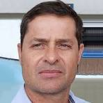
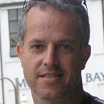

This page highlights the colleagues and collaborators with whom I have had the privilege of working throughout my career. Over the years, I have engaged in a variety of research initiatives, academic projects, and professional endeavors, each of which has been enriched by the contributions and dedication of these individuals.
Brazil

Profa. Marta Mattoso (COPPE/UFRJ) 🇧🇷
Profa. Aline Paes (IC/UFF) 🇧🇷

Prof. Marcos Lage (IC/UFF) 🇧🇷

Profa. Vanessa Braganholo (IC/UFF) 🇧🇷

Profa. Isabel Rosseti (IC/UFF) 🇧🇷

Prof. Yuri Frota (IC/UFF) 🇧🇷

Prof. Marcos Bedo (IC/UFF) 🇧🇷

Profa. Vania Neves (IC/UFF) 🇧🇷
Prof. Alvaro Coutinho (COPPE/UFRJ) 🇧🇷

Profa. Fernanda Baião (PUC-Rio) 🇧🇷
Prof. Victor Ströele (UFJF) 🇧🇷
Prof. Rodrigo Salvador (IC/UFF) 🇧🇷

Prof. Nivan Ferreira (UFPE) 🇧🇷

Prof. Paulo Mann (IC/UFRJ) 🇧🇷
Profa. Elaine Parros (USP) 🇧🇷

Prof. Bruno Francesco Rodrigues de Oliveira (UFF) 🇧🇷

D.Sc. Débora Barbosa Pina (UFRJ) 🇧🇷

Prof. Luiz Gustavo Dias (IFGoiano) 🇧🇷

D.Sc. Liliane Kunstmann (IMPA) 🇧🇷

Profa. Flavia Bernardini (IC/UFF) 🇧🇷
Profa. Agma Traina (ICMC/USP) 🇧🇷
PhD Julia Gschwend (LIneA) 🇧🇷

PhD Luiz Nicolaci da Costa (LIneA) 🇧🇷

Profa. Cristina Boeres (IC/UFF) 🇧🇷
Prof. Bruno Lopes (IC/UFF) 🇧🇷
Prof. Leonardo Murta (IC/UFF) 🇧🇷
Prof. Alexandre Plastino (IC/UFF) 🇧🇷

Profa. Lucia Drummond (IC/UFF) 🇧🇷
D.Sc. Kary Ocaña (LNCC) 🇧🇷

Profa. Lenora Schwaitzer (UFES) 🇧🇷

Prof. Fabio Porto (LNCC) 🇧🇷

Prof. Javam Machado (UFC) 🇧🇷

Prof. Sergio Lifschitz (PUC-Rio) 🇧🇷

Prof. José Maria Monteiro (UFC) 🇧🇷
Profa. Rafaelli Coutinho (CEFET/RJ) 🇧🇷
Prof. Ubiratam de Paula (UFRRJ) 🇧🇷

Prof. Eduardo Ogasawara (CEFET/RJ) 🇧🇷
International
Prof. Patrick Valduriez (INRIA - France) 🇫🇷

Profa. Adriane Chapman (University of Southampton - UK) 🇬🇧
Prof. Fabio Miranda (University of Illinois at Chicago - USA) 🇺🇸
D.Sc. Luan Teylo (INRIA Bordeaux - France) 🇫🇷

Dr. Rafael Ferreira da Silva (Oak Ridge National Laboratory - USA) 🇺🇸

D.Sc. VÃtor Sousa (Apple Inc. - USA) 🇺🇸

Prof. Paolo Missier (University of Birmingham - UK) 🇬🇧

Dr. Gaëtan Heidsieck (Göttingen University - Germany) 🇩🇪

Profa. Esther Pacitti (Université de Montpellier - France) 🇫🇷

Dr. Renan Souza (Oak Ridge National Laboratory - USA) 🇺🇸

Dr. Ji Liu (Hithink RoyalFlush - China) 🇨🇳

Profa. Carolina Veiga (James Madison University - USA) 🇺🇸

Prof. Nils Murrugarra (University of Pittsburgh - USA) 🇺🇸